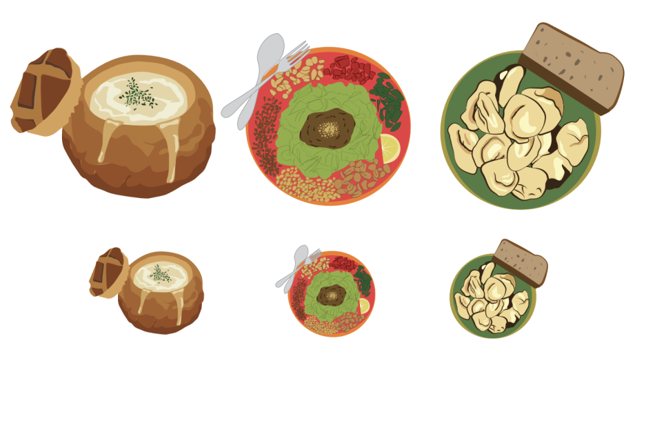

ICONS
“Icons” is a cohesive set of three different foods from restaurants that hold a unique place in San Francisco. The first dish is clam chowder served in a sourdough bread bowl, the second is the tea leaf salad from Burma Superstar, and last is the Russian dumplings from Cinderella Bakery. The three icons introduce the city’s food culture to the audience while providing a glimpse into its history.